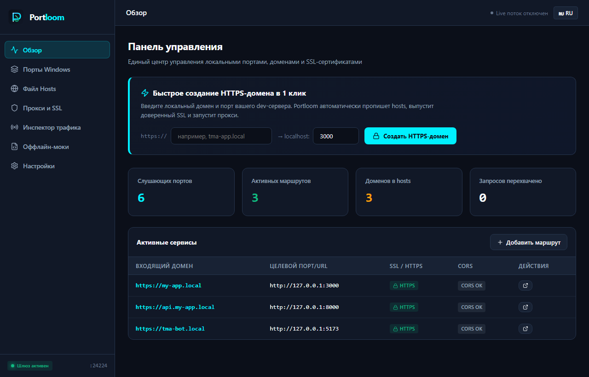

Portloom связывает воедино управление портами, профили hosts, 1-клик выпуск доверенных локальных SSL-сертификатов и высокоскоростной reverse proxy с инспектором вебхуков.

Сравните привычный сценарий и разработку с Portloom
Монолитная функциональность, нулевой оверхед, бескомпромиссная надежность.
Мгновенное сканирование всех слушающих сокетов. Отображение PID, имени исполняемого файла, памяти и защита системных служб Windows от случайного убийства.
Автономный генератор локального Root CA и выпуск X.509 сертификатов с SAN для любых доменов (*.local, localhost). Автоматическая интеграция с хранилищем Windows.
Безопасная атомарная запись в C:\Windows\System32\drivers\etc\hosts с созданием резервных копий и мгновенным сбросом DNS-кэша через ipconfig /flushdns.
Маршрутизация https://app.local → :5173 и https://app.local/api → :8000 с прозрачной поддержкой WebSocket (Vite HMR) и авто-нормализацией заголовков CORS.
Кольцевой буфер запросов в реальном времени. Инспекция заголовков, форматированный JSON полезной нагрузки, расчет задержки в миллисекундах и экспорт в cURL.
Работает полностью изолированно (Air-Gapped). Без аккаунтов, без токенов, без внешних CDN и облачных сервисов. Ваши данные никогда не покидают ваш ПК.
Выберите удобный для вас способ запуска на Windows